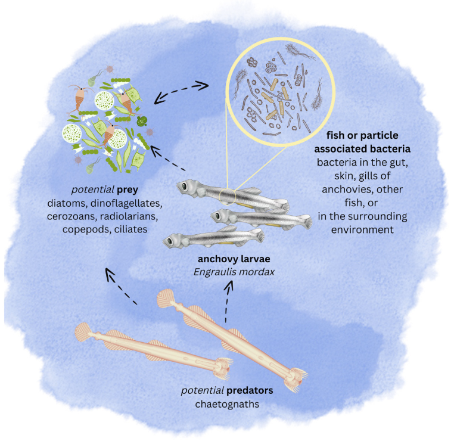

2022-2023 Projects
Listed alphabetically by project sponsor.
Amgen
Evaluation of natural language processing algorithms used for knowledge graph generation
Student team: Yujie Li, Caroline He, Sammy Suliman, Safiya Alavi, KunXiao Gao
Advisors: Maxim Ivanov, Bonnie Jin, Erika McPhilliips, Yan Lashchev
A Knowledge Graph (KG) represents knowledge as a network that relates entities such as physical objects and concepts. In a KG, the objects and concepts are represented as nodes, while their relations are represented as edges of the graph. Due to the graph structure of this knowledge representation, a KG can be a potent mechanism for searching entities and their relations, discovering new information and enabling complex decision making.

The process of updating and expanding a KG can be manual and laborious and require ongoing collaboration with subject matter experts. Natural language processing (NLP) and text-mining algorithms could streamline this process by automatically extracting essential information about objects, concepts, and their relations. Once deployed, these algorithms could populate nodes and edges of a KG in an automated fashion based on incoming data.
Two crucial processes in generating nodes and edges of the KG are Named Entity Recognition and Linking (NER/NEL) and Relation Extraction (RE). NER/NEL automatically analyzes free text to recognize character substrings that identify entities of interest, while RE identifies entity pairs with certain relations.
As NER/NEL and RE are necessary steps in generating nodes and edges of the KG, it is critically important that these algorithms accurately extract entities and their relations from free text. To quantify performance of NER/NEL and RE, benchmarking datasets are often used. The entity and relation labels in these datasets are either annotated manually by subject matter experts or algorithmically using semi-supervised and/or rule-based approaches.
The focus of this project lies in identifying open-source NER/NEL and RE algorithms that show the highest performance in recognizing such entities as “company”, “molecule”, “protein” and their relations. A critical aspect of the work will be in generating a benchmarking dataset using publicly available data.
Appfolio
Outlier detection
Student team: Ruoxin Wang, Brian Che, Mira Patel, Justin Vo, Dingan Jiang
Project advisors: Ari Polakof, Erika McPhillips
At Appfolio we have been solving multiple problems in the Property Management Accounting domain with Machine Learning technologies. Many customers do accounting with our AppFolio Property Management (APM) solution, which means that they need to input all their records (invoices, bills, checks, etc.) in Appfolio. If the customer has integrated their bank account with Plaid (third-party provider) in APM, we also have data coming directly from their bank transactions.
Customers have been telling us that they would appreciate it if they could detect anomalies in their records and transaction history. For example, they would like to know if the water bill is much more expensive than the previous months for one property, since that would likely indicate a problem. They would also appreciate knowing if there’s a bill that usually comes but it doesn’t. This is a general problem with applications in multiple areas inside our software, and so we would like to have a way of detecting anomalies automatically so that property managers don’t have to worry about every single detail for each property.
For this project, students will analyze outlier detection methods, performance evaluation metrics for empirical comparisons between methods, and assess the methods from an explainability perspective. Students will develop comprehensive method comparisons and integrate them in a dashboard to present them with the correct data visualization techniques.
California Cooperative Oceanic Fisheries Investigations (CalCOFI)
An eDNA window into larval fish habitat, ecosystem structure, and function using CalCOFI data
Student team: Yuqing (Summer) Xia, Kassandra Trejo-Zamora
Project advisors: Erin Satterthwaite, Trevor Ruiz
Most marine fishes and invertebrates produce high abundances of tiny larvae that, depending on the species, reside in the open ocean for weeks to months. Mortality is incredibly high (often upwards of 99%) for most fishes during the larval stage but because larvae are so abundant small changes in rates of survival result in orders of magnitude difference in survival to adult stages (i.e., recruitment). For this reason, elucidating the actual mechanisms in the ocean that affect larval survival is an integral component of fisheries management. Yet, despite over a century of recruitment research, accurately estimating these parameters has been difficult and predicting conditions that facilitate larval survival and drive recruitment remains the fundamental challenge in fisheries science and management.
CalCOFI data include physical, environmental, and biological measurements collected from water samples and tows from ship cruises conducted quarterly since ~1950. Measurements are: (i) georeferenced – taken at recorded spatial coordinates; (ii) longitudinal – taken repeatedly over time; (iii) profiled – recorded across depth in the water column; and (iv) multivariate. The complexity of the datasets due to these attributes presents both promise for discovery and challenges for data analysis and display.
This project will aim to ascertain predictive relationships between environmental and biological systems. Focus on the relationship between environmental DNA and fish larvae is anticipated, but students will have some latitude to shape the direction of their work and may utilize secondary datasets as appropriate to the overall project aim. The primary objectives for this project will be: (i) developing interactive data displays effective for exploratory analysis and communication; and (ii) applying statistical methodology for prediction of variables of interest. Students will work primarily in R with version control.

Carpe Data
Business characteristics classification models
Student team: Noa Rapoport, Haoming Deng, Lex Navarra, Dan Le, Yutong Wang
Project advisors: Andy Chen, Amy Huynh, Joshua Bang

A business owner usually needs to buy insurance to protect their business against property loss and general liability. And insurance carriers would adjust the premium based on how much risk a business has. Risk can refer to the likelihood of a loss, and the severity of a potential loss.
Insurance carriers are particularly interested in detecting businesses in “risky” industries or detecting risks in businesses. We have defined three risk groups of interest, “explosive”, “entertainment”, and “traffic”. If a business has one or more characteristics in the table attached in the appendix, it is categorized in related risk groups.
Carpe Data is hoping to improve its current flagging methodology for businesses with risky behavior through the creation of a machine learning model that will categorize businesses into risk groups (defined below). The model will utilize different business information such as its name, industries, and social media data points (i.e. textual reviews, images, etc.) to help label businesses that fall into the “Entertainment” or “Traffic” risk groups. Note that these groups are NOT mutually exclusive and businesses may overlap with each other.
For this project, students will apply new NLP techniques and ML methods to label businesses according to risk groups. Students will validate their approach using manually labeled data and compare their approach with Carpe Data’s current classification method.
Caves Visual Ecology Lab
Measuring visual acuity in bees from high-resolution images
Student team: Eitan Rashkovan, Allen Wang, Kaylin Roberts, Evan Ji
Project advisors: Eleanor Caves, Todd Oakley, Gia Anh, Trevor Ruiz
Visual acuity, the ability to perceive detail, is ecologically important, as it dictates what aspects of a visual scene an animal can resolve. Humans have some of the highest acuity in the animal kingdom, so we live in a perceptual world that is rich in spatial detail. Acuity, however, is highly variable, varying by at least four orders of magnitude across animals, meaning that the majority of animals cannot resolve as much spatial detail as we do. Despite acuity’s ecological importance, however, we know little about why this variation exists, and one unanswered question in most animal groups is whether there aspects of a species’ ecology that correlate with variation in acuity. This project will leverage high resolution photographs taken by the NSF-funded Big Bee Project (http://big-bee.net) to estimate acuity bees. Bees are an excellent group in which to examine variation in acuity, because they exhibit a wide range of lifestyles and ecologies. To measure acuity from a photograph, we must measure two parameters: the diameter of the hexagonal facets (ommatidia) that comprise the bee’s compound eye, and the eye’s radius of curvature.
For this project, students will begin with a set of images from approximately 50 species of bees. For each species, several photographs are available that view the bee from different angles. Students will use this dataset to develop algorithms for estimating the diameter of ommatidia and radius of curvature from a photograph. Students will use estimates to calculate acuity. If time permits, the project will explore potential correlates of acuity among aspects of bee ecology, for example nocturnality/diurnality, living socially or solitarily, and sex differentiation.


Cheadle Center for Biodiversity and Ecological Restoration (CCBER)
Constructing three-dimensional bee models from high-resolution images
Student team: Daniel Badilla, Allester Ramayrat, Sofia Spasibenko, William Long
Project advisors: Katja Seltmann and Joshua Bang

While bees are critical to sustaining a large proportion of global food production, as well as pollinating both wild and cultivated plants, they are decreasing in both numbers and diversity. Our understanding of the factors driving these declines is limited, partly because we need more data on the behavioral and anatomical traits that may make bees vulnerable or resilient to human-induced environmental changes, such as habitat loss and climate change.
As part of the Big-Bee project (http://big-bee.net), we are creating 2D & 3D high-resolution images of bees to study anatomical variation. Creating 3D images of bees is challenging because they are small, hairy objects. Several technologies for creating these models (e.g., Agisoft Metashape, meshroom, Neural Radiance Fields) are available. Still, it has yet to be known which performs the best or if adjusting specific model parameters will improve performance. Students will begin by learning the basics of 3D modeling using existing images in Agisoft Metashape before using their acquired knowledge to create bee measurements and improve future models.
Climate Hazards Center (CHC)
Identifying the drivers of food insecurity in the developing world
Student team: Giselle Ramirez, Thomas Shi, Alex Lim, Ryan Quon, Disha Hauzaree
Project advisors: Greg Husak, Shrad Shukla, Enbo Zhou
Throughout much of the developing world, human livelihoods are dependent on the success of rainfed agriculture and pastoral biomass for food. In these regions, precipitation (PPT), or rainfall, is a critical indicator of vegetative health and success, and so a number of methods have been developed for expressing the quantity and quality of rainfall. In addition to the amount of PPT coming into the system, there has also been increasing attention on the atmospheric demand for water. One way of capturing this is the use of potential evapotranspiration (PET), which combines temperature, humidity, solar radiation, and wind speed to estimate the amount of water which would be soaked up by the atmosphere over a given surface. Many indicators have sought to combine these factors in a meaningful way to identify deficits in available water for vegetation, and anticipate food shortages in the developing world.
However, PPT and PET are inversely related. The factors associated with rainfall (cloud cover, high humidity, latent cooling) also lead to low PET. This capstone project seeks to explore the relationship between PPT and PET in space and time. Where these factors are tightly coupled, drought events would be accompanied by increased PET, and lead to larger water deficits than might be indicated by precipitation alone. Where the relationship is less coupled, there may be independent factors driving the PET, and we will seek to understand the drivers of that independent component.
This project will work with quasi-global grids of PPT and PET from the last 40 years to explore these relationships, potentially identify drivers of both PPT and the independent component of PET, and maybe even explore developing statistical forecasts of these factors based on sea surface temperatures.
Evaluating and validating stations and satellite based daily precipitation dataset
Student team: Lily Li, Changhee Yoon, Hannah Li, Russell Liu, Fei Du
Project advisors: Shrad Shukla, Greg Husak, Enbo Zhou
Daily precipitation is critical for monitoring climate hazards such as floods and droughts, and for running hydrologic and crop water balance models that provide estimates of available water to better manage and utilize water resources. The Climate Hazards Center (CHC) is a global leader in generating precipitation dataset based on satellites and on ground stations. The dataset is called CHIRPS, which stands for Climate Hazards Center InfraRed Precipitation with Stations (CHIRPS) and is a gridded dataset that covers the entire globe, at a spatial resolution of 5km X 5km. CHIRPS version 2.0 has been widely used globally, for monitoring climate hazards and for understanding long-term changes in precipitation.
CHC currently is in the process of developing the latest version of this dataset which is CHIRPS 3.0. The goal of this project is to evaluate the daily precipitation values from this dataset. The evaluation process will involve downloading and processing several independent precipitation datasets that come from diverse sources, to compare them with CHIRPS 3.0, and advanced statistical methods to quantify the performance of the daily CHIRPS 3.0 dataset relative to other datasets. The results of this analysis will be documented and submitted for a peer-reviewed publication.

Patrick Green
How do mantis shrimp fight in a community of competitors?
Student team: Luke Fields, Brian Fan, Ashley Son, Tianhong Liu
Project advisors: Patrick Green, Adam Waterbury, Trevor Ruiz
What are the strategies that animals use when competing over essential resources like mates, food, or shelter? Decades of animal behavior research into this question has identified several tactics animals may use. However, most studies do not realistically replicate the problem competing animals face in nature. For example, most experimental studies stage contests between two individuals over one resource; in reality, animals likely interact with a population of multiple competitors, all fighting over multiple resources. Understanding how animals fight in these more naturalistic scenarios will help us discover the strategies animals use in natural systems, while reaffirming or contesting the conclusions of previous work.
This study intends to track how a population of individuals compete over multiple resources by studying contests in mantis shrimp, crustaceans that use spring-powered strikes during fights over access to protective burrows. Specifically, we will set up “mesocosms”, large areas holding multiple, individually-marked mantis shrimp and multiple burrows. By tracking each individual over weeks to months, we can see who fights with whom, what their contests are like (e.g., how aggressive), and who ends up holding which resource(s).
The primary objectives of this project will be to build methods to track uniquely-marked individuals from video recordings, and to identify timestamps in videos when two individuals come into contact (perhaps leading to a fight). Finally, an additional goal of this project will be to gather movement and residence data from each individual—identifying how much individuals move through their environment and which resource(s) they ultimately hold. The methods from this project will form the basis for a long-term project that modifies this approach for multiple experiments in the future.
Inogen
Optical character recognition and text extraction techniques for portable oxygen concentrator prescription forms
Student team: Ankur Malik, Kabir Snell
Project Advisors: Trevor Ruiz, Paula Sarmiento, Norbert Leinfellner
Inogen is a medical technology enterprise that specializes in the research, development, manufacture, and marketing of portable oxygen concentrators for patients diagnosed with chronic respiratory illnesses. These devices offer a lightweight and practical alternative to conventional oxygen therapy, enabling patients to lead a more active and self-sufficient lifestyle.
Inogen maintains an extensive collection of concentrator patient prescription forms, but these are stored as a large collection of individual documents. The content of these forms is not collated in an easy-to-access database supporting queries or comprehensive analyses of patient data. However, this would produce gains in efficiency and potentially produce to data-driven insights that lead to improvements in patient care.
Our team is collaborating with faculty and students from Purdue University and The Data Mine to digitize Inogen’s comprehensive patient database of medical forms. We are utilizing two distinct implementations of Optical Character Recognition (OCR) tools – a commercial software tool and custom scripting in Tesseract, an open-source Python package that utilizes Google’s OCR system. Independently of text extraction, additional data manipulation is necessary to render text content in analysis-ready form. Our primary objective for this project is to automate the extraction of key patient information from prescription forms and render this data in analysis-ready form. We are using mock patient forms to develop an automated pipeline and aim to provide Inogen with an approach and/or program that can be implemented at scale with real patient records.
Evidation Health
Impact of case definition on early detection systems for COVID-19
Student team: Shannon Rumsey, Edward Ho, Nealson Setiawan, Jen Park, Chunting Zheng
Project advisors: Arinbjörn Kolbeinsson, Eric Daza, Megan Elcheikhali
Detecting infectious diseases, such as COVID-19, early can accelerate case isolation and break chains of infection. We can train a model to do this but there is no clear definition of when a case starts, meaning the ground-truth labels (used for training and evaluation) are often inconsistent between studies. A hypothesis is that case definition, i.e., the time-point at which an individual changes labels from healthy to infected, has a significant effect on systems designed to identify individuals.
This project will use home testing kit study data to analyse and compare the effect of changing the case definition on detection through existing models (or new models, depending on project progress) and consider whether the evaluation metrics reflect real-world impact. If progress allows, the project will seek to find the optimal case-onset point (or some function of accuracy vs early detection) for an early-detection system.
MOVE Lab
Detecting changes in human mobility and movement patterns associated with wildfires in California
Student team: Ellie Burrell, Justing Liu, Lyndsey Umstead, Piero Trujillo, Haotian Xia
Project advisors: Somayeh Dodge, Evgeny Noi, Laura Baracaldo, Enbo Zhou
The goal of this project is to use movement as a marker to study behavioral responses of people to environmental changes, in particular during natural disasters. As a case study, this project utilizes large and multi-sourced mobility data sets to investigate changes in movement patterns in associations with wildfire events in California. First, the goal is to investigate available data sets and their suitability for representing movement patterns in wildfire-impacted areas. Second, the project focuses on applying machine learning techniques to identify and trace changes in mobility time series and to associate them to the timelines of different wildfire events between 2019-2022 (before, during, and after the fire) compared with a baseline (e.g. a year without wildfire). The outcomes of this project will inform simulation models to assess and estimate wildfire risk on movement flows in Californian communities.

Peak Performance Project (P3)
Understanding links between biomechanical data and on-court NBA production
Student team: Bernie Graves, Raymond Lee, Aria Kajeh, Jai Uparkar
Project advisors: Eric Leidersdorf, Alex Franks, Erika McPhillips, Yan Lashchev
Over the past decade, resources poured into analytics efforts and performance staff in the NBA (comprising sport scientists, strength coaches, physical therapists, dietitians, athletic trainers, and physicians) have consistently grown. However, despite continued investment in both of these practices, the understanding of relationships between human performance data and on-court productivity has not yielded the expected return. As a field, our understanding of the physical traits that comprise a competent NBA athlete is limited by a lack of consistent data collection processes, team staff churn, the inherent complexity of studying the human body, and the diversity of player roles in basketball.
Beginning in 2013, P3 (Peak Performance Project) began collecting biomechanical data on professional and collegiate basketball players performing ballistic movements in their laboratories. As it currently stands, P3 owns the largest biomechanics database on NBA athletes in the world. This dataset comprises 3D Motion Capture and Force Plate data – allowing P3 to create skeletal models of their athletes for in-depth movement analysis. While many of P3’s efforts to date have involved studying injury-risk and training adaptations within this cohort, the extent to which this data can help inform which physical tools are important in today’s NBA landscape remains largely unknown.
P3’s in-house dataset consists of 3D Motion Capture and Force Plate data conducted on professional and collegiate basketball players – approximately 1300 assessments in total. This data has been collected on a series of vertical plane (jumps) and lateral plane (lateral acceleration drills) actions in P3 labs in Atlanta, GA and Santa Barbara, CA. In addition to P3’s in-house data, scraping publicly available basketball data web will be integral to project success.

For this project, students will build a web-scraping tool for the purposes of comparing P3’s in-house data with on-court production at the professional and collegiate levels, build ML models to understand links between biomechanics data and on-court production, and develop an R Shiny application to visualize relationships between P3 data and on-court performance.
Stanford National Accelerator Lab
Diffraction image selector
Student team: Aleksander Cichosz, Ryan Stofer, Vardan Martirosyan, Teo Zeng, Yuer Hao
Project advisors: Derek Mendez and Robin Liu
The quality of images used during serial crystallography data processing often weighs heavily on the accuracy of results. It is routine for experimenters to visually inspect and tune parameters to select the best images to process. By using state-of-the-art machine learning technologies, coupled with realistic forward modeling of crystallographic data, one can build a regression model which accepts images as inputs, and outputs experimentally interesting properties. This paves the way towards a machine intelligence capable of auto-selecting the highest quality images during diffraction collection.
For this project, students will use resmos2 data comprising about 10000 simulated diffraction images with corresponding labels, as well as additional simulated datasets, to build a regression model that will work in real-time to label images during data collection at SSRL beamlines. This will greatly enhance the user experience at the SSRL/SMB beamlines.